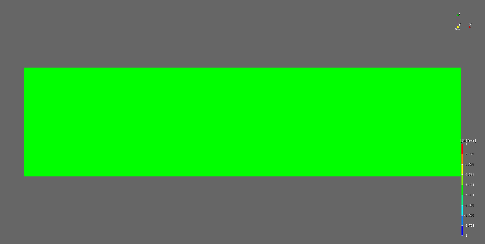

Tutorial 02
Solid Cantilever
목표
Tutorial 01과 같은 cantilever 문제를 solid 요소로 다시 모델링해 봅니다.
이 tutorial의 목적은 다음과 같습니다.
- solid 모델이 beam 모델보다 왜 더 많은 입력을 요구하는지 이해하기
- 결과 검토 관점에서 solid 모델의 장점을 체감하기
언제 solid 모델이 더 적합한가
다음과 같은 경우에는 solid가 더 적절할 수 있습니다.
- 단면 내부 응력 분포를 직접 보고 싶을 때
- 고정단 부근의 국부 응력 집중을 확인해야 할 때
- 단순 section 가정으로 표현하기 어려운 형상일 때
tutorial 모델
이 tutorial에서는 Tutorial 01의 철근콘크리트 cantilever를 같은 하중 조건으로 3차원 블록 전체를 모델링합니다.
- 형상:
2.4 m x 0.30 m x 0.60 m - 요소 타입:
C3D8 - mesh:
8 x 2 x 4 - 지점 조건:
x=0면 전체 고정 - 하중: 상면에
60 kPa하향 pressure
beam 폭이 0.30 m이므로, 상면 pressure 60 kPa는 beam tutorial에서 사용한 18 kN/m 등분포하중과 같은 크기의 선하중으로 환산됩니다. 그래서 두 tutorial 결과를 직접 비교할 수 있습니다.
사용 input file
저장소 파일: Example/Tutorials/tutorial-solid-cantilever.inp
*Material, Type=IsoElasticity, Name=Concrete
30e9, 0.2, 0, 2500 # E, nu, alpha, density
*Section, Type=Solid, Name=ConcreteSolid
Concrete, 1
*Model, Type=Block3D
Cantilever, Auto, Auto, C3D8, ConcreteSolid
0.0, 2.4, 8
0.0, 0.30, 2
0.0, 0.60, 4
*Constraint, Type=Support, Name=FixedEnd
Cantilever-NX, X|Y|Z
*Load, Type=SurfaceDistributed, Name=DeckPressure
Cantilever-PZ, Pressure, 60000
*Step, Type=Static, Name=Service
Uniform, 0.1, 1
*Activate, Type=Element
Cantilever
*Activate, Type=Constraint
FixedEnd
*Activate, Type=Load
DeckPressure
*Output
D, S
*Print, File=tutorial-solid-cantilever.prn
D@Cantilever
모델링 순서
- material과 solid section을 정의한다
- Material 문서
- Solid 요소 문서
*Model, Type=Block3D로 3차원 block mesh를 생성한다- Model 문서
- 왼쪽 면에 고정단 경계조건을 정의한다
- 윗면에 pressure 하중을 정의한다
- static service step을 정의하고 해석을 실행한다
beam 모델과 달라지는 점
- node와 element 수가 빠르게 증가합니다
- 모델링 시간과 해석 시간이 모두 늘어납니다
- 대신 응력 contour를 훨씬 직접적으로 볼 수 있습니다
해석 실행
원격 제어 예시:
hfVisualizer --remote import D:\Work\tutorial-solid-cantilever.inp --type Hyfeast
hfVisualizer --remote save D:\Work\tutorial-solid-cantilever.h5.hdb
hfVisualizer --remote run-analysis
결과 확인 포인트
- 자유단 변위가 beam 모델과 같은 수준인지
- 고정단 부근의 응력 분포가 어떻게 나타나는지
- mesh를 바꾸면 결과가 얼마나 민감하게 변하는지
후처리 예시:
hfVisualizer --remote post-step Service
hfVisualizer --remote post-frame 1
hfVisualizer --remote post-plot contour on
hfVisualizer --remote post-plot deformed on
hfVisualizer --remote post-scalar S.Mises
hfVisualizer --remote post-display scalarbar on
아래 그림은 같은 cantilever를 hfVisualizer에서 변형 형상과 von Mises 응력 contour로 표시한 예시입니다.

실무적 감각
- 전역 거동만 빠르게 보고 싶다면 beam 모델이 더 효율적입니다.
- 상세 응력 검토가 중요하다면 solid 모델이 더 설득력 있습니다.
- 실제 업무에서는 beam으로 먼저 검토하고, 필요한 국부 부위만 solid로 상세화하는 흐름이 자주 쓰입니다.
다음 문서
- beam과 solid 선택 기준을 정리한 Tutorial 03 - Beam vs Solid를 이어서 읽는 것을 권장합니다.